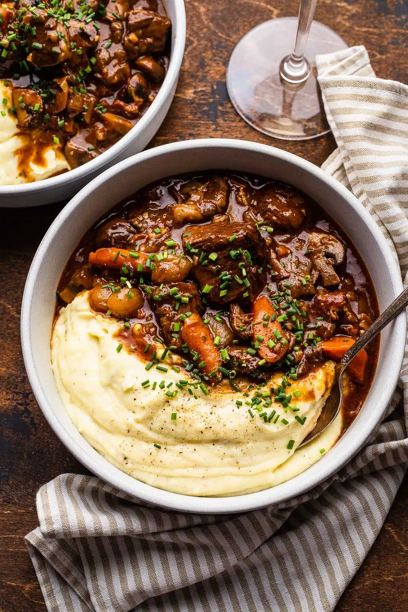
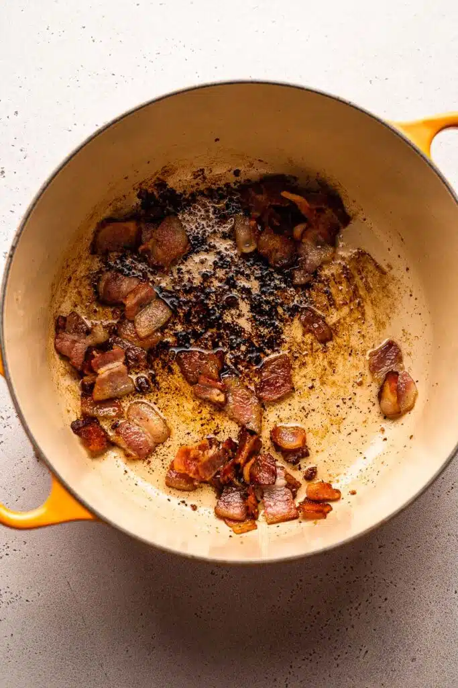
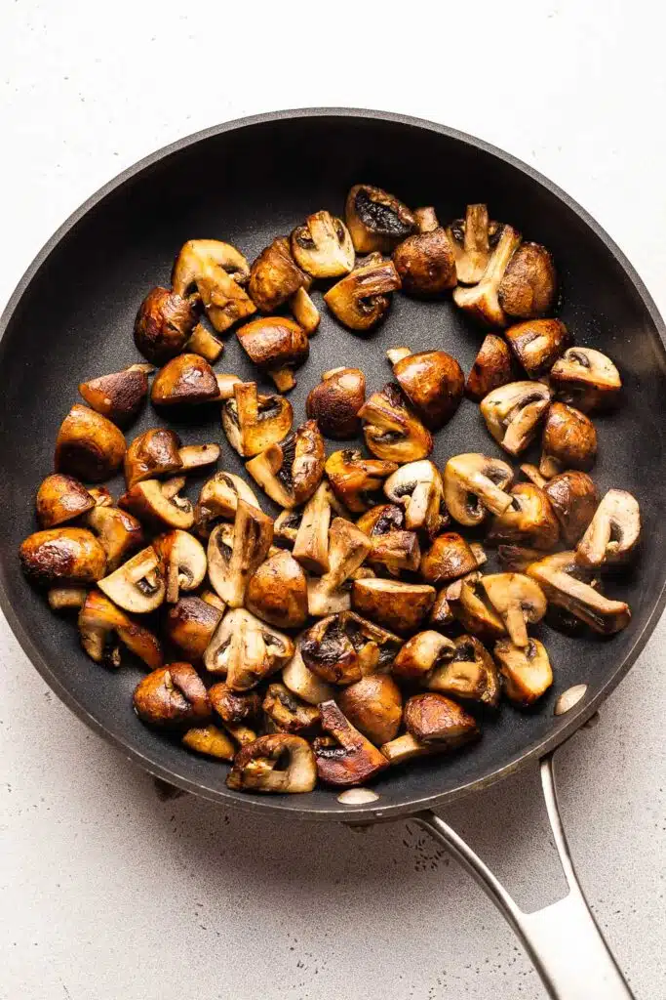

Beef Bourguignon Recipe

History of Beef Bourguignon
This rich stew originates from the Burgundy region of Eastern France, an area renowned for its architecture, excellent wines, and cattle. Beef Bourguignon was first mentioned in cookbooks in 1903, by chef Auguste Escoffier. It started as a humble peasant stew using up tougher cuts of beef by stewing them longer and eventually evolved into the iconic dish as it’s known today.
Beef Bourguignon started as a peasants’ recipe, possibly dating as far back as the Middle Ages (400-1400 A.D.), as a way to slow-cook tough, unwanted cuts of meat using ingredients they had on hand. Beef bourguignon is traditionally made with Burgundy wine, hence the dish’s name.
This Classic Beef Bourguignon is flavored with carrots, onion, garlic, pearl onion, herbs (like thyme and bay leaf), bacon, red wine, and mushrooms. All the flavors meld together while slow cooking in the oven into an incredibly rich and savory stew.
Tools Needed
- 5 qt Dutch Oven
- Sharp Knife
- Cutting Board
Ingredients & Substitutions
- Beef. Beef chuck is best here, but brisket also works!
- Bacon. Bacon adds a delicious smoky and rich flavor to the beef bourguignon.
- Veggies. Onion and carrot is classic here.
- Garlic. Garlic makes everything better!
- Flour. Flour helps thicken the beef bourguignon sauce. Read on for how to make this recipe gluten free.
- Tomato Paste. Tomato paste adds a rich, deep flavor.
- Beef Broth. Homemade is always best, but the second best is the true beef stock you buy in the freezer section.
- Beef Bouillon. A bit of beef bouillon bolsters the flavor of the stew. My favorite brand is “Better than Bouillon”.
- Herbs. Fresh thyme and fresh bay leaves are the best here. You could use dried bay leaves if necessary.
- Pearl Onions. Pearl onions are added later on so you get nice little pieces of onion that aren’t totally stewed. I used frozen, but you can definitely use fresh too. If using frozen, defrost the onions and drain them before using.
- Mushrooms. Adding crispy sautéed mushrooms towards the end of the braise adds flavor while the mushrooms retain their meaty texture.


The Process
- Render the bacon. Add the chopped bacon to your dutch oven. Turn the heat to medium-low and cook the bacon, stirring occasionally, until it’s browned and has released some of its fat. Use a slotted spoon to remove the bacon from the pan and transfer to a small bowl.
- Sear the beef. Season the cubes of beef all over with salt and pepper. Increase the heat on the dutch oven to medium-high and sear the beef on all sides until browned. You may need to do this in batches. Remove the beef from the pan.
- Saute the veggies. Decrease the heat to medium and add the butter. Add the chopped onions and carrots to the pot and saute for 2-3 minutes, while stirring often. Add the chopped garlic and cook for another minute. Then, add the tomato paste and cook for 2-3 minutes, stirring often until the paste has darkened in color. Once the tomato paste is ready, sprinkle the flour over the top and stir well to incorporate.
- Add the wine, stock, and herbs. Add the wine to the pot and use a silicone spoon to work up any browned bits from the bottom of the pot. Add in the beef broth and bouillon and bring to a simmer. Add the beef and bacon back to the pot, along with the thyme and bay leaves.
- Braise time! Cover the pot and transfer to a 350 F oven. Cook for 2 1/2 hours.
- Add the mushrooms and pearl onions. Around the 2 1/2 hour mark, melt the butter in a skillet. Once the butter is hot and foamy, add the mushrooms and cook until browned. Add the pearl onions and cook for another 5 minutes. Remove the beef bourguignon from the oven and add the mushrooms and onions. Return to the oven until the beef is very tender. Remove from the oven and leave covered for 30 minutes before serving.
-